Ingest Application Logs via Log Hub Console
Estimated time: 10 minutes
Log Hub supports ingest AWS Service logs and application (e.g. Nginx, Apache HTTP Server) logs. This section will guide you to ingest the access logs of a group of Spring Boot servers which you have deployed in Deploy Demo Web Site.
In this section, you will learn how to install log agents on selected instances, define log format and ingest logs on a single web console. The following is the architecture diagram.

Create application log pipeline
-
Go to LogHub Web Console, choose Application Log in Log Analytics Pipelines section 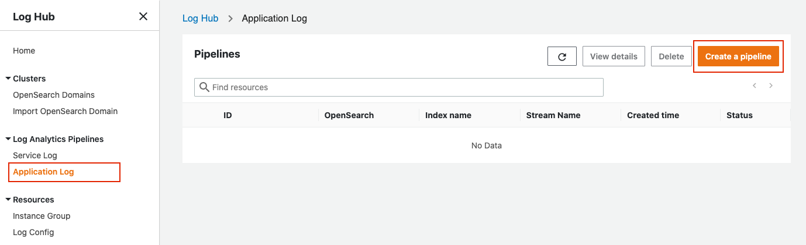
-
Click Create a pipeline and type in the following parameters:
- Index name:
app-pipe - Shard number:
2 - Enable auto scaling?:
No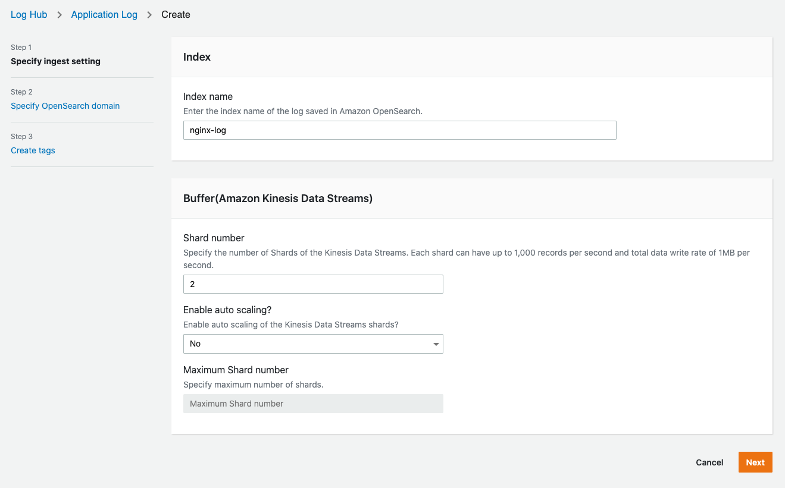
- Index name:
- Click Next, and choose the AOS domain as workshop-os, remain other parameters and select Next, then Create
- Then you can see the pipeline is in Creating status.
Create EC2 policy
If we want to enable servers to be able to stream logs to kinesis, EC2 policies are needed! So let's do some quick steps and create a new EC2 policy for your Demo Website spring servers.
Warning
Please wait until the application pipeline status changes to Active!
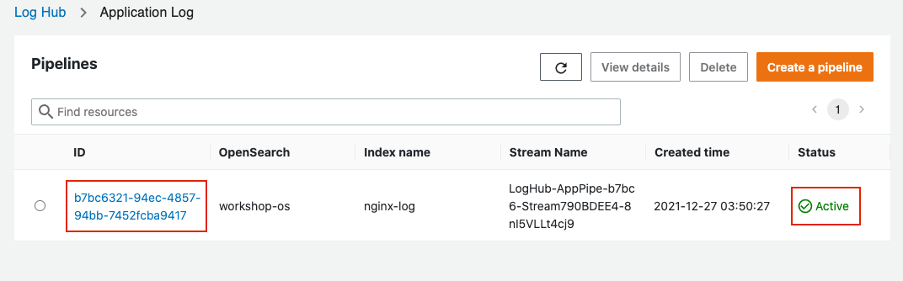
-
On the Log Hub Console, select the pipeline name and view the details of that log pipeline
-
Go to Permission tab and copy the provided JSON policy 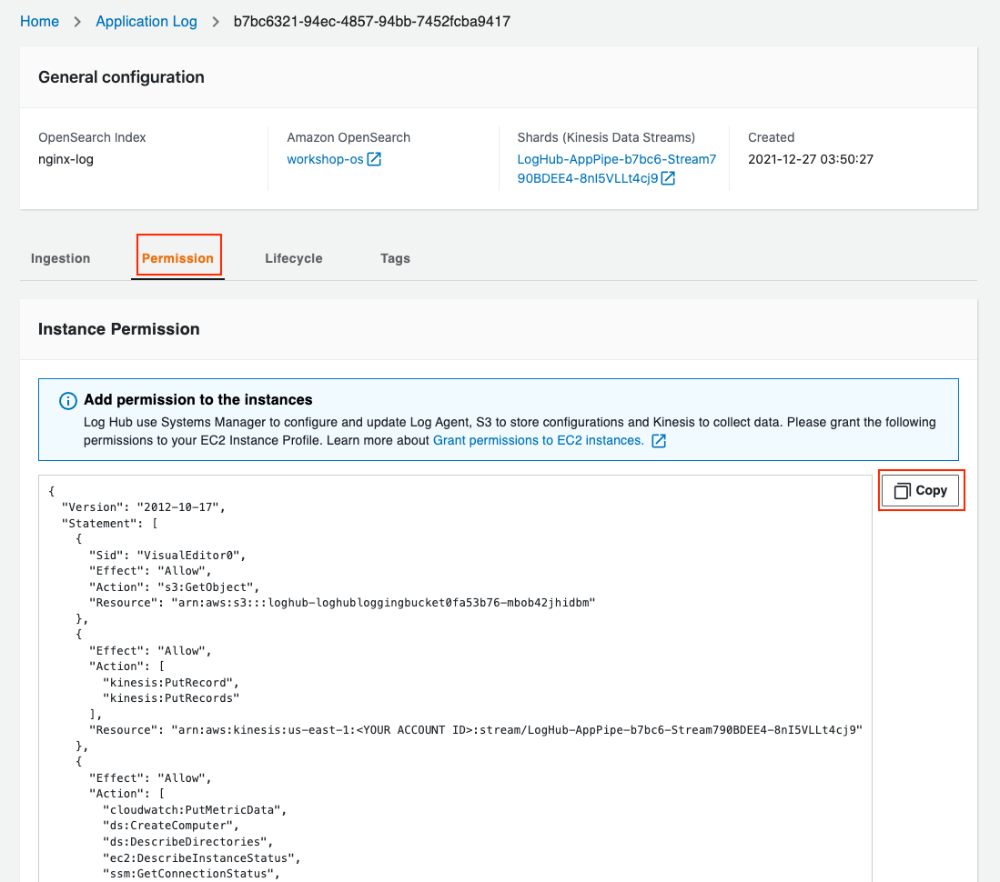
-
Go to AWS Console > IAM > Policies on the left column
-
Click Create Policy, choose JSON and replace all the content inside the text block. Remember to substitute
<YOUR ACCOUNT ID>with your true account id! Please refer to the graph below: 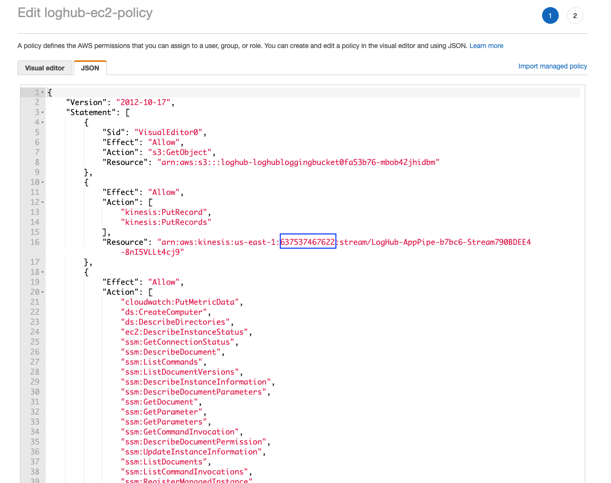 -
Click Next, Next, then type in the name for this policy, example name:
loghub-ec2-policy -
Choose Create policy
-
Go to AWS Console > EC2, choose one of the instance which name is
LoghubWorkshop/workshopASG, select Security tab and click the IAM Role link -
Click Add permissions > Attach policies, and attach that newly created policy to this role
Create Instance Group
-
Go to LogHub Web Console, choose Instance Group on the left side of the page
-
Click Create an instance group, now you can see two instances on the list:
Note
All the instances with ssm agent will come up in this list, if there are non-relevant instances, please search for Instances ID in AWS Console first. Choosing the wrong instances might cause no data in dashboard.
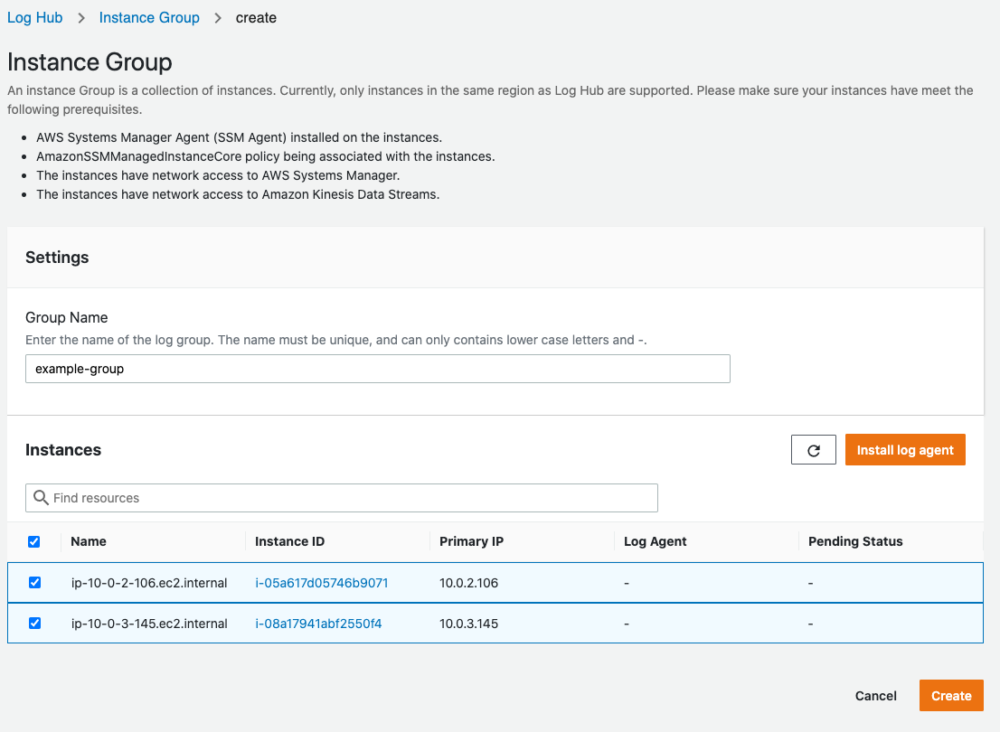 3. Select both of the instances and click Install log agent, the agent installation process will start. We use fluent-bit as log agent in LogHub. Please wait until the installation complete, it will show Online in Pending Status column: 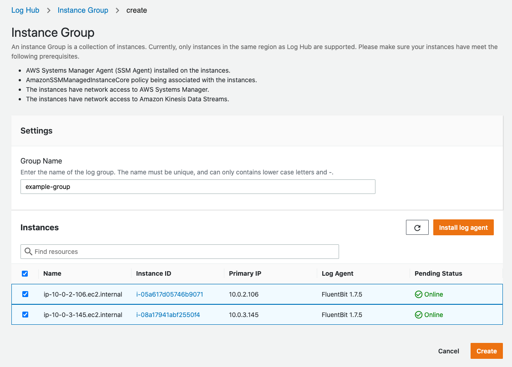 4. Then we can type in the name for instance group and click Create.
The instance group is successfully created.
Create Spring log config
-
Go to Log Hub Console, choose Log Config on the left most side of the page
-
Click Create a log config, type in the Config Name like:
spring-config. -
Choose the log type as
Multi-line Text.Choose the Parser as
Java-Spring Boot. -
Copy paste the following log format in Log Format text box:
%d{yyyy-MM-dd HH:mm:ss.SSS} %-5level [%thread] %logger : %msg%n -
Copy and paste the following sample log into the Sample Log box:
Click Parse Log, you can see the following attributes: 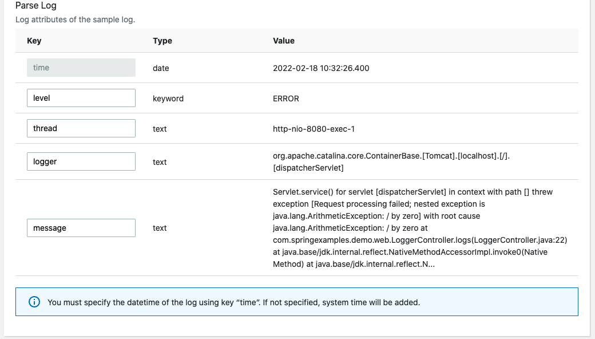2022-02-18 10:32:26.400 ERROR [http-nio-8080-exec-1] org.apache.catalina.core.ContainerBase.[Tomcat].[localhost].[/].[dispatcherServlet] : Servlet.service() for servlet [dispatcherServlet] in context with path [] threw exception [Request processing failed; nested exception is java.lang.ArithmeticException: / by zero] with root cause java.lang.ArithmeticException: / by zero at com.springexamples.demo.web.LoggerController.logs(LoggerController.java:22) at java.base/jdk.internal.reflect.NativeMethodAccessorImpl.invoke0(Native Method) at java.base/jdk.internal.reflect.NativeMethodAccessorImpl.invokeThis means that your sample logs has been successfully parsed base on input log format.
-
Click Save.
We have successfully created a multi-line Spring Boot log config.
Create log ingestion
Note
Please make sure the application log pipeline is in Active status, before proceeding this section.
-
Find the application log pipeline you just created, by clicking it's name, we can enter the detailed page: 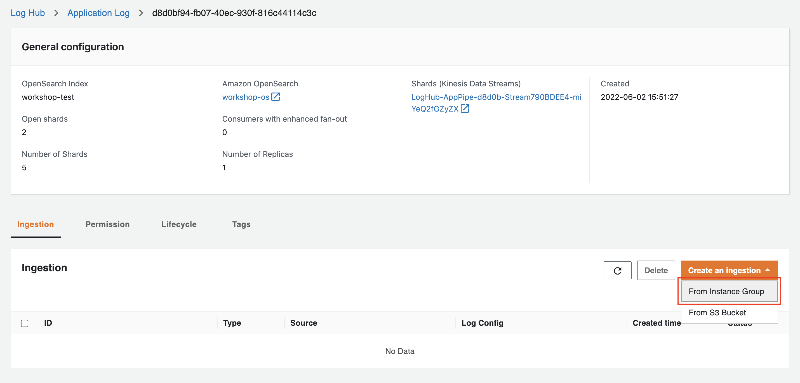
-
Click Create an Ingestion, choose From Instance Group. Then, select Choose exists, click Next
-
Select the instance group you have just created and click Next
-
Type in the following log path:
/tmp/springboot-sf4j-logback.log -
Select Choose exists and choose spring-config. The rest parameters will be auto filled for you.
-
Click Next, then click Create
We have successfully created one ingestion for Spring Boot Logs.
Create Spring Boot Multi-line Logs
Let's go back to your Workshop Demo Website again, go to the detail page of Funny Moto. 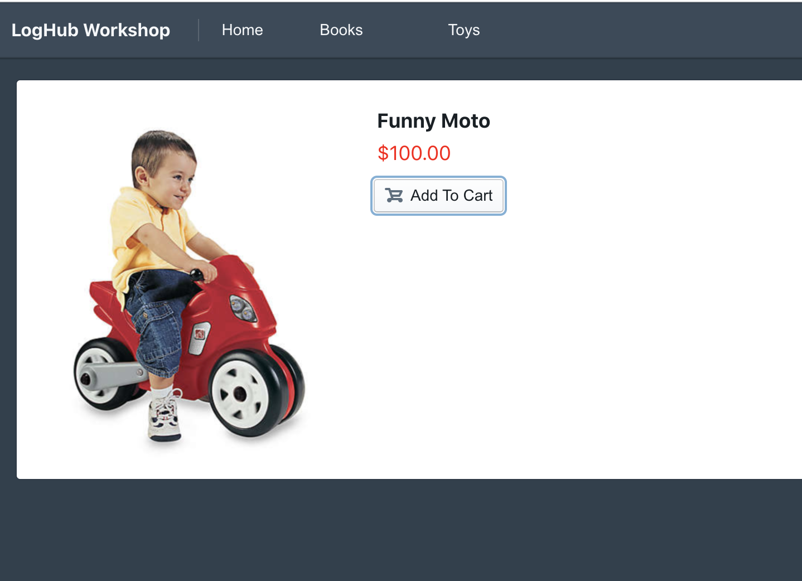
-
Click Add To Cart button.
-
Status Code 500 will show up, that's what we expected: 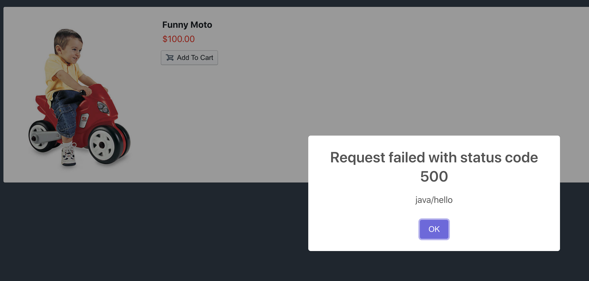 We are generating Spring Boot exceptions in the back-end server.
You can do these two steps multiple times to create more java multi-line logs.
View Application Log Dashboard
We have created Spring Boot application log Pipeline, now let's go back to the OpenSearch Dashboard and have a look!
-
Open the Dashboard page in your browser.
-
Create Index Pattern
Go to the location shown in the graph below and select Stack Management: 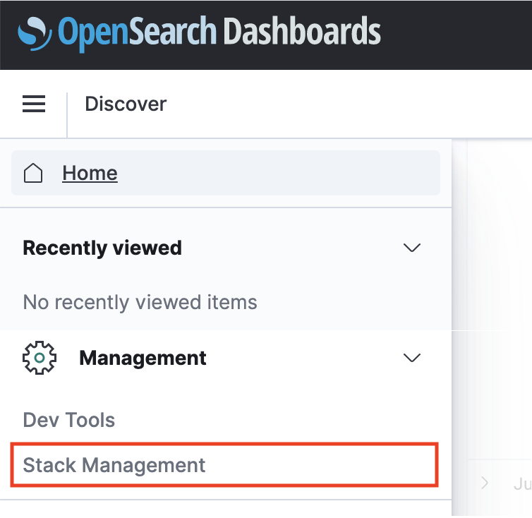
Select Index Patterns: 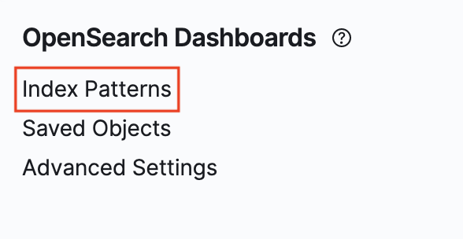
Select Create Index Pattern: 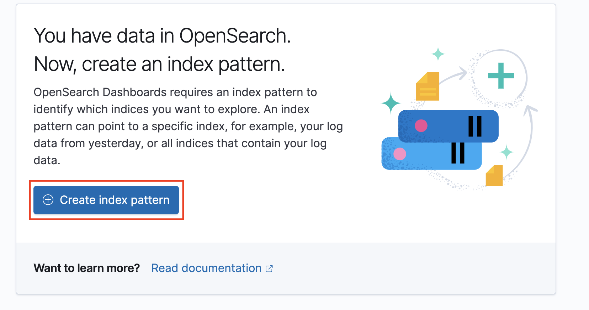
Type in
app-pipe-*and click Next step >: 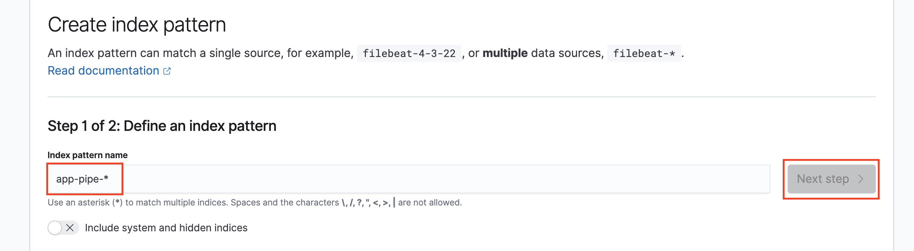Select time as time field and click Create index pattern: 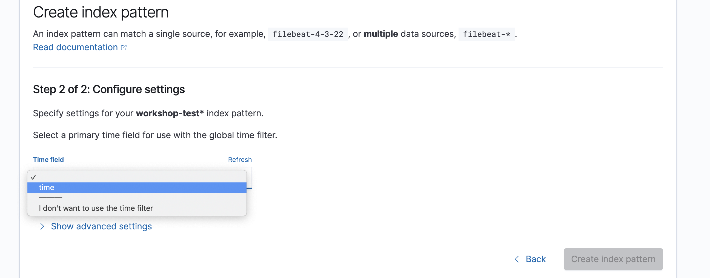
-
Go to the location shown in the graph below: 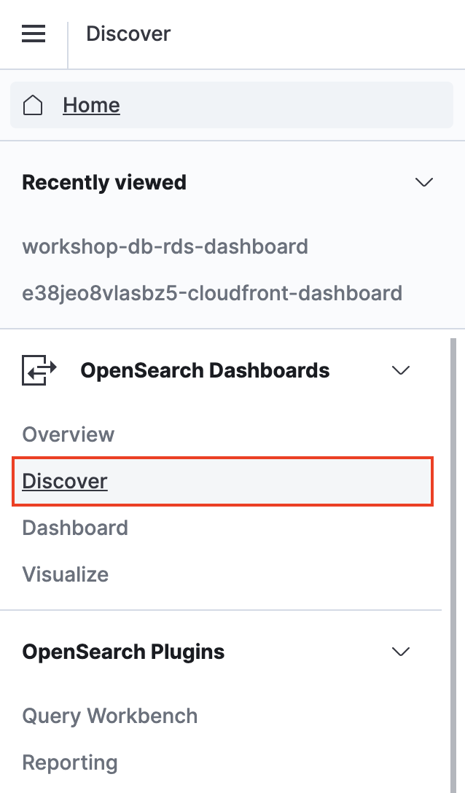
Click app-pipe at the location below: 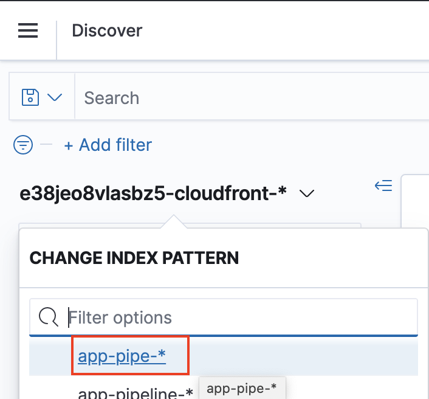
-
You can find the original Spring boot logs:
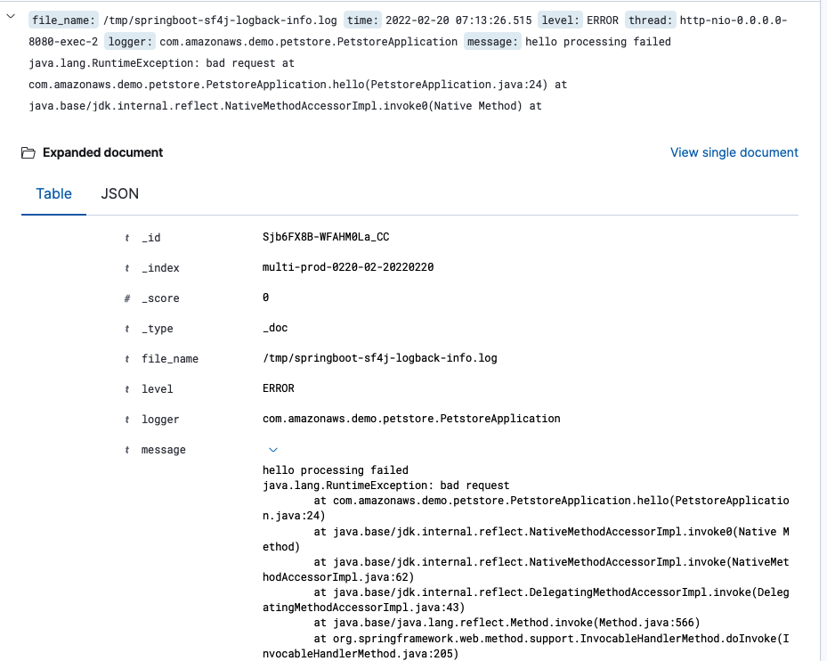
We have completed all the steps of creating an application log pipeline.